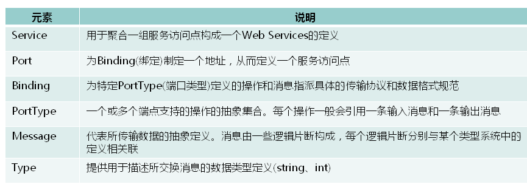

WebService学习
WebService(jax-ws)三要素
- SOAP: 基于HTTP协议，采用XML格式，用来传递信息的格式。
- WSDL: 用来描述如何访问具体的服务。
- UDDI: 用户自己可以按UDDI标准搭建UDDI服务器，用来管理，分发，查询WebService 。其他用户可以自己注册发布WebService调用。
SOAP(通讯协议)
Simple Object Accrss Protocol，简单对象访问协议是在分散或分布式的环境中交换信息的简单的协议，是一个基于XML的协议，它包括四个部分:
1 SOAP封装(envelop)，封装定义了一个描述消息中的内容是什么，是谁发送的，谁应当接受并处理它，以及如何处理它们的框架;
2 SOAP编码规则，用于表示应用程序需要使用的数据类型的实例。
3 SOAP RPC 表示远程过程调用和应答的协定。
4 SOAP绑定(binding)，使用底层协议交换信息。
请求的协议体
1 | POST /weather HTTP/1.1 |
响应的协议体
1 | HTTP/1.1 200 OK |
WSDL
WSDL(Web Service Description Language)，是一个用来描述Web服务（Web Service）和说明如何与Web服务通信的XML语言。因为是基于XML的，所以WSDL既是机器可阅读的，又是人可阅读的，这将是一个很大的好处。

WSDL阅读方法
是从下往上读。
每个wsdl有且只有一个Service节点。
1、先找Service节点
2、Service节点中找port节点。每个port对应一个PortType。
3、Port节点对应一binding节点。每个binding节点对应一个PortType
4、PortType中有operation 节点就是服务的方法。
5、operation 中有Input（参数）和output（返回值）
6、Input（参数）和output（返回值）对应message节点
7、Message对应element节点(定义在XSD中)。Element节点对应complexType节点描述了参数及返回值的数据类型。
使用注解规范
@WebService: 定义服务，在public class上边。
targetNamespace:指定命名空间。
name:portType的名称。
portName:port的名称。
serviceName:服务名称。
@WebResult:定义返回值。
name:返回结果值的名称。
@WebParam:定义参数。
name:指定参数的名称。
@WebMethod
exclude:排除指定的方法。
XSD
XML解决了数据表示的问题，但它没有定义一套标准的数据类型，更没有说怎么去扩展这套数据类型。例如，整形数到底代表什么？16位，32位，还是64位？这些细节对实现互操作性都是很重要的。W3C制定的XML Schema(XSD)就是专门解决这个问题的一套标准。它定义了一套标准的数据类型，并给出了一种语言来扩展这套数据类型。Web service平台就是用XSD来作为其数据类型系统的。
UUDI
UDDI 是一种目录服务，通过它，企业可注册并搜索 Web services。企业将自己提供的Web Service注册在UDDI，也可以使用别的企业在UDDI注册的web service服务，从而达到资源共享。
UDDI旨在将全球的webservcie资源进行共享，促进全球经济合作。
但是使用webservice并不是必须使用UDDI，因为用户通过WSDL知道了web service的地址，可以直接通过WSDL调用webservice。
使用实例
服务端:1
2
3
4
5
6
7
8
9
10
11
12
13
14
15
16
17
18
19public interface WeatherInterface {
public String getWeatherByCity(String city);
}
public class WeatherInterfaceImpl implements WeatherInterface {
public String getWeatherByCity(String city) {
String result = ",天气寒冷";
return city + result;
}
}
public class WeatherServer {
public static void main(String[] args){
Endpoint.publish("http://localhost:12345/weather", new WeatherInterfaceImpl());
}
}
服务端启动后进入客户端工程相应的目录下使用wsimport -s . http://localhost:12345/weather?wsdl生成代码1
2
3
4
5
6
7
8public class WeatherClient {
public static void main(String[] args){
WeatherInterfaceImplService service = new WeatherInterfaceImplService();
WeatherInterfaceImpl portType = service.getWeatherInterfaceImplPort();
String result = portType.getWeatherByCity("北京");
System.out.println(result);
}
}
Apache CXF
Apache CXF是一个开源的Web Services框架:
- 支持多种协议:SOAP1.1,1,2 XML/HTTP、RESTful 或者CORBA
- 部署灵活:可以运行在Tomcat,Jboss,Jetty(内置),weblogic上面。
- 可嵌入的Web服务组件：例如可以嵌入到Spring Framework和Geronimo中。
- 高性能,最小的计算开销。
服务器端
实体类:1
2
3
4
5
6
7public class Weather {
private int minTemp;
private int maxTemp;
private String info;
private Date date;
}
服务接口与实现:1
2
3
4
5
6
7
8
9
10
11
12
13
14
15
16
17
18
19
20
21
22
23
24
25
26
27
28
public interface WeatherInterface {
public List<Weather> getWeatherByCity(String city);
}
public class WeatherInterfaceImpl implements WeatherInterface{
public List<Weather> getWeatherByCity(String city) {
return getWeatherInfo(city);
}
private List<Weather> getWeatherInfo(String city){
List<Weather> weathers = new ArrayList<>();
Calendar c = Calendar.getInstance();
Date d1 = c.getTime();
c.set(Calendar.DATE, c.get(Calendar.DATE) + 1);
Date d2 = c.getTime();
c.set(Calendar.DATE, c.get(Calendar.DATE) + 2);
Date d3 = c.getTime();
c.set(Calendar.DATE, c.get(Calendar.DATE) + 3);
weathers.add(new Weather(30,20,city+":今天很热",d1));
weathers.add(new Weather(31,21,city+":今天很热",d2));
weathers.add(new Weather(32,22,city+":今天很热",d3));
return weathers;
}
}
服务启动:1
2
3
4
5
6
7
8
9
10
11
12
13
14public class WeatherService {
public static void main(String[] args){
//创建JaxWsClientFactoryBean
JaxWsServerFactoryBean factoryBean = new JaxWsServerFactoryBean();
//设置SEI接口
factoryBean.setServiceClass(WeatherInterface.class);
//设置SEI实现类对象
factoryBean.setServiceBean(new WeatherInterfaceImpl());
//设置服务发布地址
factoryBean.setAddress("http://localhost:12345/weather");
//发布服务
factoryBean.create();
}
}
客户端
先使用Apache CXF的wsdl2java -d . http://localhost:12345/weather?wsdl生成客户端代码:1
2
3
4
5
6
7
8
9
10
11
12
13
14
15
16
17public class CXFClient {
public static void main(String[] args){
//创建一个JaxWsProxyFactoryBean
JaxWsProxyFactoryBean factoryBean = new JaxWsProxyFactoryBean();
//设置portType的class
factoryBean.setServiceClass(WeatherInterface.class);
//设置地址
factoryBean.setAddress("http://localhost:12345/weather?wsdl");
//调用create方法生成portType对象
WeatherInterface portType = (WeatherInterface) factoryBean.create();
//调用服务端方法
List<Weather> weathers = portType.getWeatherByCity("北京");
for(Weather w:weathers){
System.out.println(w);
}
}
}